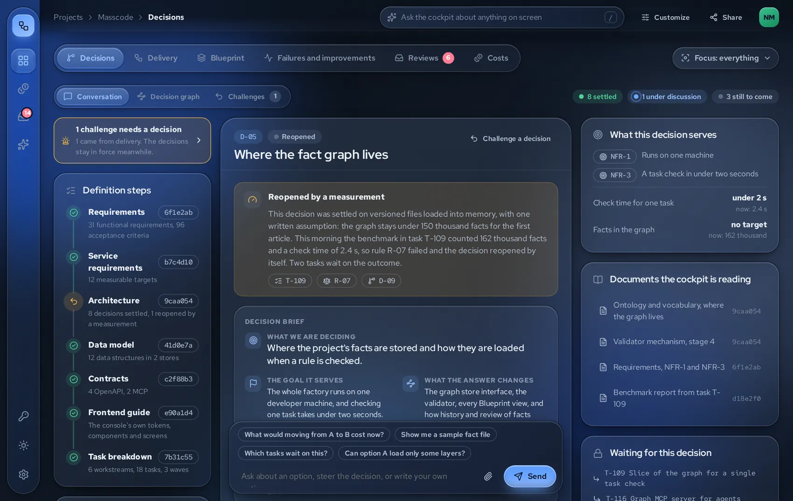
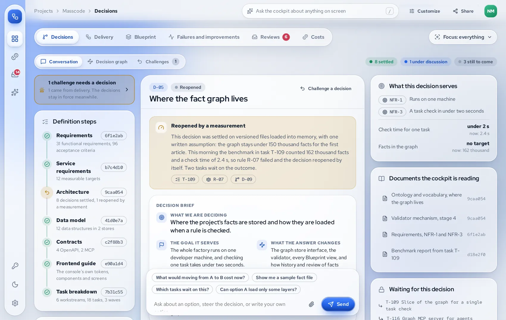
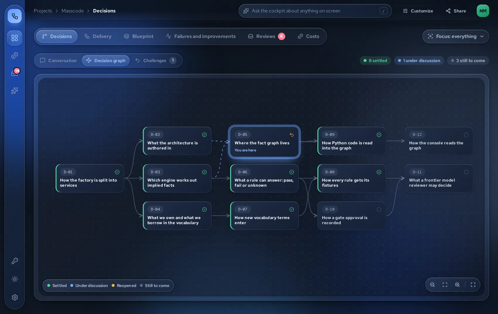
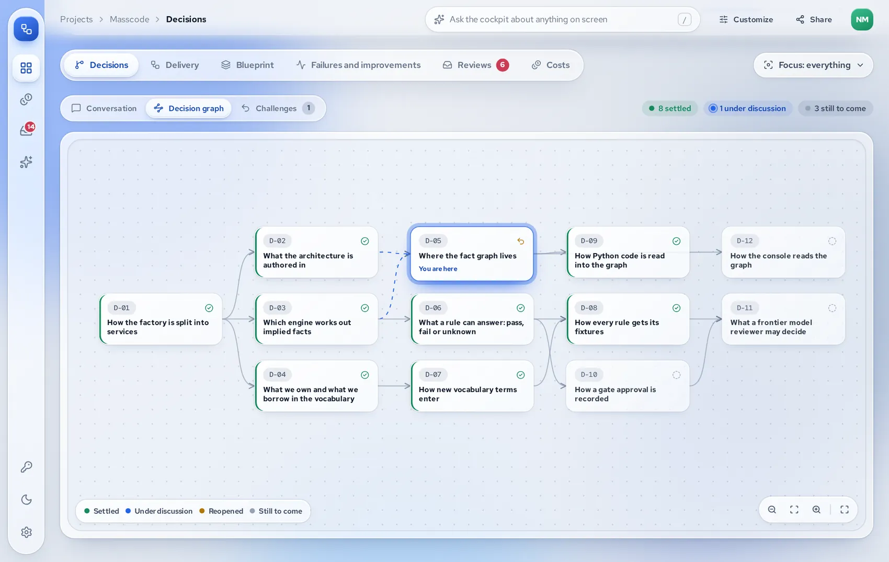

01Decision support
Clear requirements from the first conversation.
Masscode starts with why the project exists, then the features that serve it, then requirements with measures and non goals. Decisions come one at a time, each briefed by an advisor that researches current sources and draws the diagram you need.
- Each brief shows only the facts that decision touches, with two or three options and what each one opens and closes.
- Routine decisions are accepted in a batch, so your attention goes where it matters.
- A decision reopens by itself when a measurement crosses one of its assumptions.




In the cockpitD-05 reopened when the graph grew past its recorded limit.